Stability of engagement: states, landscapes and students
Mohammed Saqr
University of Eastern FinlandSonsoles López-Pernas
University of Eastern FinlandKamila Misiejuk
FernUniversität in Hagen, GermanySource:
vignettes/articles/stability-landscapes.Rmd
stability-landscapes.RmdExperimental. stability_landscape(),
landscape_trend() and landscape_surface() are
new in Nestimate 1.0.1; their arguments and output may change in later
releases.
Which engagement states hold students, how long does it take to move between them, and how stable is each student’s own sequence? This article answers these questions with Nestimate (Saqr, López-Pernas, & Misiejuk, 2026) for the states of a whole cohort, for groups of students with different trajectories, over the program, and for each student.
The questions come from longitudinal research on student engagement. Saqr and López-Pernas (2021) followed the engagement state of students in every course of a full program and found trajectories that stayed engaged, stayed in between, or were troubled; Saqr, López-Pernas, Jovanović and Gašević (2023) traced the trajectories of students’ online tactics and strategies in the same way. A single snapshot of engagement does not forecast achievement, while sustained engagement marks a stable academic trajectory (Saqr, López-Pernas, Helske, & Hrastinski, 2023). López-Pernas and Saqr (2024a) read the same dynamics as properties of a complex system, the momentum of achievement and the inertia of disengagement, and Vemuri et al. (2026) traced how disengagement persists among first-year students.
In the complex-systems view of these studies (Saqr, Schreuder, & López-Pernas, 2024; Saqr, Dever, et al., 2025), a stable state is an attractor that holds students and draws them back, and a stable student is one whose sequence stays in few states for long spells (Saqr, López-Pernas, & Tikka, 2026). A stable average can hide change within students (López-Pernas, Conde, Raspopović Milić, & Saqr, 2026), so stability is measured here for the states and for each student.
| Question | Function |
|---|---|
| How long do students stay in each state, and where do they go when they leave? | stability_landscape() |
| What are the persistence, return and sojourn times of each state? | markov_stability() |
| How long does it take to reach one state from another? | passage_time() |
| Is the chain one connected process? | chain_structure() |
| Do groups of students live in different landscapes? |
stability_landscape() on a grouped network |
| Does the stability of each state change over the program? | landscape_trend() |
| Which state holds the students whose sequences are most stable? | landscape_surface() |
| How stable is each student’s sequence? | sequence_metrics() |
Data
trajectories records the engagement state of 138
students in each of 15 consecutive courses, coded with the three
engagement states of Saqr and López-Pernas (2021):
Disengaged, Average or Active. A
missing value marks a course the student did not take; most missing
values are trailing runs, students who left the program.
#> 1 2 3 4 5 6 7 8
#> [1,] "Active" "Disengaged" "Disengaged" "Disengaged" "Active" "Active" "Active" "Active"
#> [2,] "Average" "Average" "Average" "Average" "Average" "Average" "Average" "Average"
#> [3,] "Average" "Active" "Active" "Active" "Active" "Active" "Active" "Active"
#> 9 10 11 12 13 14 15
#> [1,] "Average" "Active" "Average" "Active" NA NA NA
#> [2,] "Average" "Active" "Average" "Average" "Average" "Average" "Average"
#> [3,] "Active" "Average" "Active" "Active" "Active" "Active" "Active"The transition network (Saqr, López-Pernas, Törmänen, et al., 2025; Saqr, López-Pernas, & Tikka, 2025) gives the probability of each state in the next course given the state in the current one. The three states have a natural order, and the landscapes are drawn in it.
network <- build_network(trajectories, method = "relative")
network#> Transition Network (relative probabilities) [directed]
#> Weights: [0.035, 0.698] | mean: 0.333
#>
#> Strongest edges (9 of 9):
#> from to weight
#> Active Active 0.698
#> Average Average 0.610
#> Disengaged Disengaged 0.483
#> Disengaged Average 0.397
#> Active Average 0.267
#> Average Active 0.204
#> Average Disengaged 0.186
#> Disengaged Active 0.120
#> Active Disengaged 0.035
#>
#> extract_edges(include_self = TRUE) lists every edge; extract_transition_matrix() gives the weight matrix;
#> extract_initial_probs() the initial probabilities.
engagement <- c("Disengaged", "Average", "Active")Active students stay Active with probability 0.70, Average students stay Average with 0.61, and Disengaged students stay Disengaged with 0.48; a Disengaged student moves to Average more often (0.40) than to Active (0.12).
The states
How long do students stay in each state?
stability_landscape() draws the network as a ball in a
set of cups (Scheffer et al., 2009), the basins of attraction of the
complex-systems reading of engagement (López-Pernas & Saqr, 2024a;
Saqr, López-Pernas, & Tikka, 2026). The warning signals that precede
a shift between basins have been traced in students’ engagement long
before drop-out (Saqr, López-Pernas, Tikka, & Spitzer, 2026). A
state that is followed by itself with probability
is left after
courses on average, its expected stay, and the depth of its cup is the
log of that stay,
.
Expected stay is then
,
the escape-time law of a particle in a potential well (Kramers, 1940); a
state that is always left at once has depth 0. The intervals come from
1,000 resamples of students.
landscape <- stability_landscape(network, states = engagement, iter = 1000,
seed = 2026)
landscape#> Stability landscape: 3 states, 1 network, 1000 resamples
#>
#> Cups (depth = log of the expected stay; deeper = more stable):
#> state depth ci_lower ci_upper dwell stay share
#> Disengaged 0.66 0.49 0.85 1.93 0.48 0.19
#> Average 0.94 0.83 1.06 2.56 0.61 0.43
#> Active 1.20 1.02 1.38 3.31 0.70 0.38
#>
#> Net circulation (per step):
#> Active -> Average -> Disengaged -> Active: 0.0092 [0.0031, 0.016]
#>
#> Exit probabilities: summary(x, table = "exits")The table gives each cup’s depth with its interval, the expected stay
(dwell), the stay probability and the share of observed
courses spent in the state. Active is the deepest cup (depth 1.20 [1.02,
1.38]): students stay 3.3 courses on average once they are active.
Average follows (0.94, 2.6 courses) and Disengaged is the shallowest
(0.66, 1.9 courses). The intervals of Active and Disengaged do not
overlap. How deep a cup is and how much time is spent in it are
different things: Average holds 43% of the courses against 38% for
Active, because students enter Average more often, but they leave it
sooner.
With three states the chain also has a net circulation, the part of the dynamics a landscape cannot show (Schnakenberg, 1976): 0.009 per course [0.003, 0.016], running Active to Average to Disengaged and back to Active. Students decline one step at a time and recover by the direct jump more often than the reverse.
plot(landscape)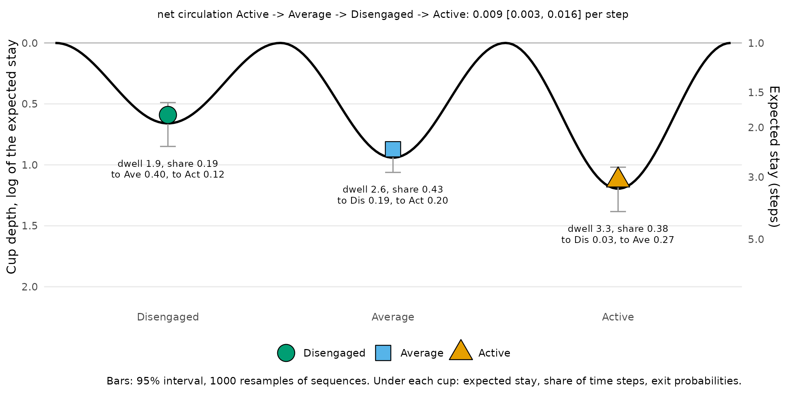
The ball sits at the bottom of each cup; the grey bars are the 95% intervals, and the right axis reads the depth as an expected stay. Under each cup are its expected stay, its share of courses and where students go when they leave it.
summary(landscape, table = "exits")#> group from to probability count
#> 1 network Disengaged Average 0.39692308 129
#> 2 network Disengaged Active 0.12000000 39
#> 3 network Average Disengaged 0.18641811 140
#> 4 network Average Active 0.20372836 153
#> 5 network Active Disengaged 0.03495441 23
#> 6 network Active Average 0.26747720 176Students who leave Disengaged go to Average three times as often as to Active (0.40 against 0.12), and students who leave Active almost never drop straight to Disengaged (0.035, 23 transitions in the whole data). Re-engagement and disengagement both pass through Average.
How stable is each state as a Markov chain?
markov_stability() reports the Markov quantities behind
the landscape for each state (Kemeny & Snell, 1976; Helske et al.,
2024): persistence (the probability of staying,
),
the stationary probability (the long-run share of time in the state),
the return time (the expected number of steps to come back after
leaving,
),
the sojourn time (the expected length of a stay,
),
and the mean time to and from the other states.
markov <- markov_stability(network)
markov#> Markov Stability Analysis (3 states) | attractor: Average | stickiest: Active
#>
#> state persistence stationary_prob return_time sojourn_time avg_time_to_others
#> Active 0.6976 0.3719 2.69 3.31 6.99
#> Average 0.6099 0.4431 2.26 2.56 6.74
#> Disengaged 0.4831 0.1850 5.41 1.93 4.47
#> avg_time_from_others
#> 5.84
#> 3.20
#> 9.16
plot(markov)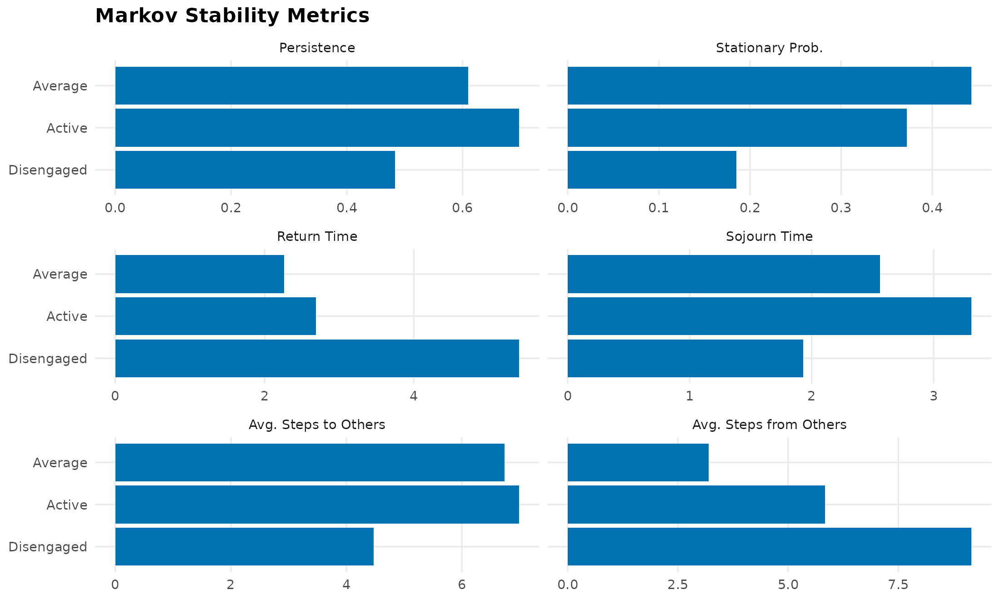
The long run splits the time 0.44 Average, 0.37 Active and 0.19 Disengaged. Disengaged is the least visited state and the slowest to return to (5.4 courses), and the other states are far from it: reaching Disengaged takes 9.2 courses on average from the other two states, while leaving it to reach them takes 4.5. Average is reached from the other states in 3.2 courses.
How long does it take to reach a state?
passage_time() gives the full matrix of mean first
passage times: the expected number of courses to reach the column state
from the row state for the first time (Kemeny & Snell, 1976). The
diagonal is the return time.
passage <- passage_time(network, states = engagement)
passage#> Mean First Passage Times (3 states)
#>
#> Disengaged Average Active
#> Disengaged 5.4 2.8 6.2
#> Average 8.0 2.3 5.5
#> Active 10.4 3.6 2.7
#>
#> Stationary distribution:
#> Disengaged Average Active
#> 0.1850 0.4431 0.3719
plot(passage)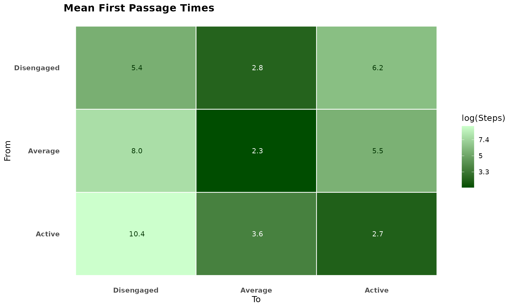
A Disengaged student reaches Average in 2.8 courses and Active in 6.2. An Active student reaches Disengaged only after 10.4 courses on average, the longest passage in the matrix, and almost always through Average (8.0 courses from Average). Re-engagement from Disengaged is faster than disengagement from Active. Saqr, López-Pernas and Tikka (2026) read this asymmetry, slow decline and faster recovery, as resilience: the system returns to its attractor more readily than it leaves it.
Is the chain one connected process?
chain_structure() classifies the states of the chain:
which states communicate, which are recurrent or transient, whether any
are absorbing, and whether the chain is irreducible, aperiodic and
reversible (Kemeny & Snell, 1976). The stationary distribution and
the passage times above assume an irreducible chain.
chain <- chain_structure(network)
chain#> Chain structure [3 states, 1 communicating classes]
#> irreducible: TRUE aperiodic: TRUE regular: TRUE reversible: FALSE
#> recurrent classes: 1 transient classes: 0
#>
#> Use summary(x) for the per-state table, plot(x) for the heatmap.
plot(chain)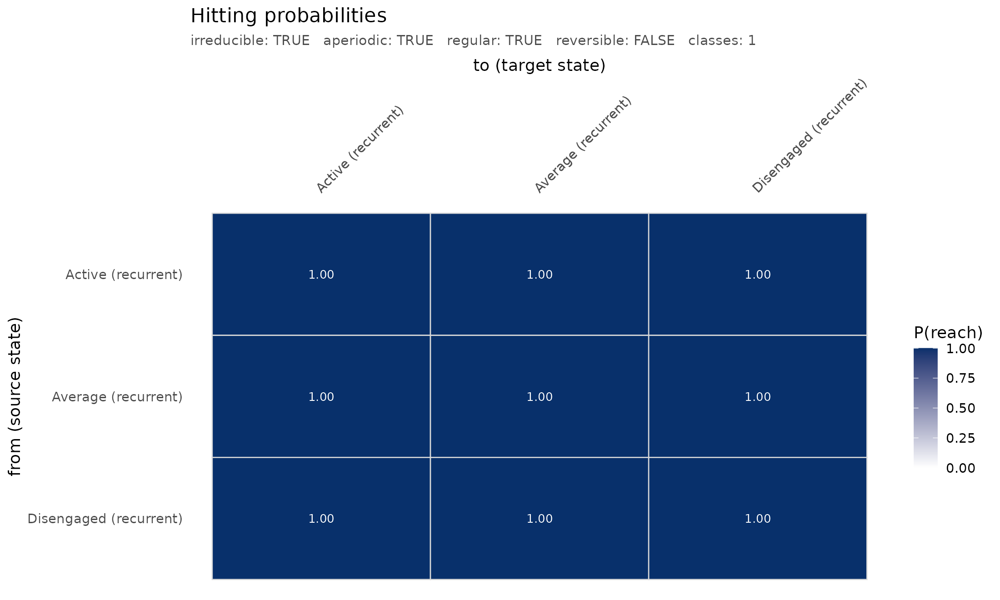
The three states form one communicating class, so every state can be reached from every other and nothing is absorbing. The chain is regular (some power of the matrix is positive everywhere) and not reversible: the flow from Active to Average to Disengaged and back to Active does not balance its reverse, which is the circulation the landscape reported.
Trajectory clusters
Do the students follow distinct trajectories?
Engagement over a full program follows a small number of distinct
trajectories (Saqr & López-Pernas, 2021; Saqr, López-Pernas,
Jovanović, & Gašević, 2023). The VaSSTra method finds them by
turning indicators into states and clustering the sequences of states
(López-Pernas & Saqr, 2024b). build_clusters() groups
the sequences by their Hamming distance with partitioning around medoids
(Saqr, López-Pernas, Helske, et al., 2024), here into three
clusters.
clusters <- build_clusters(trajectories, k = 3, seed = 2026)
clusters#> Sequence Clustering [pam]
#> Sequences: 138 | Clusters: 3
#> Dissimilarity: hamming
#> Quality: silhouette = 0.360
#>
#> Cluster N Mean within-dist Medoid
#> 1 47 (34.1%) 5.898 124
#> 2 74 (53.6%) 8.389 44
#> 3 17 (12.3%) 5.412 103
cluster_networks <- build_network(clusters)
state_distribution(cluster_networks)#> group state count proportion
#> 1 Cluster 1 Active 528 0.75213675
#> 2 Cluster 1 Average 139 0.19800570
#> 3 Cluster 1 Disengaged 35 0.04985755
#> 4 Cluster 2 Average 663 0.60382514
#> 5 Cluster 2 Disengaged 263 0.23952641
#> 6 Cluster 2 Active 172 0.15664845
#> 7 Cluster 3 Disengaged 56 0.80000000
#> 8 Cluster 3 Average 11 0.15714286
#> 9 Cluster 3 Active 3 0.04285714The three clusters hold 47, 74 and 17 students, with an average silhouette of 0.36, a moderate separation. Cluster 1 is mostly active (75% of its observed courses), cluster 2 mostly average (60%, with 24% disengaged), and cluster 3 mostly disengaged (80%). Cluster 3 also has little data: 70 observed courses for 17 students, out of 255 possible, because most of its students left the program early.
sequence_plot(clusters, type = "index", ncol = 3, nrow = 1)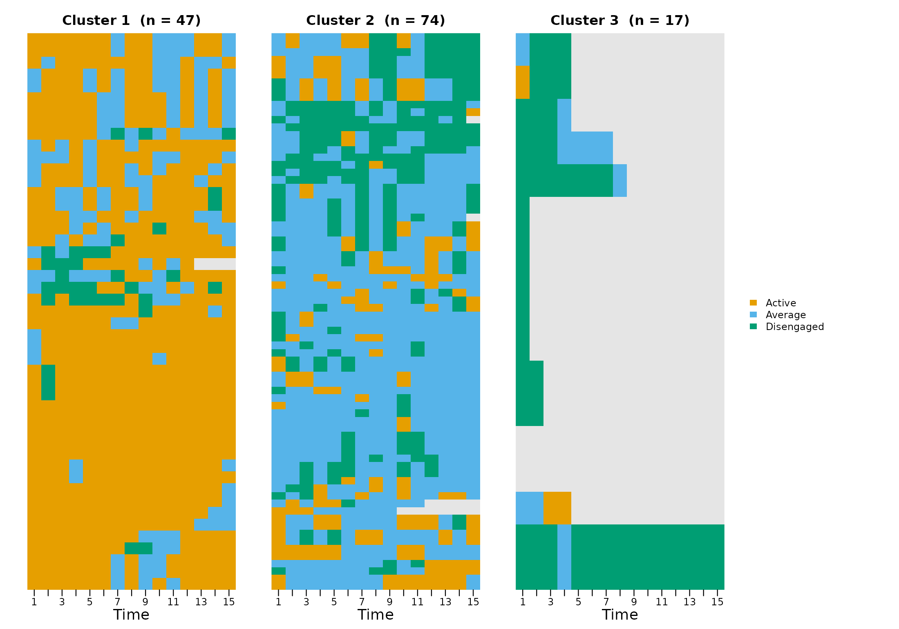
Each row is one student and each column one course. Cluster 1 is mostly Active and cluster 2 mostly Average, with runs of Disengaged; most rows of cluster 3 end within the first courses, and the grey is the part of the program those students did not take.
What landscape does each cluster live in?
The same call on the grouped networks gives one landscape per cluster.
cluster_landscape <- stability_landscape(cluster_networks, states = engagement,
iter = 1000, seed = 2026)
cluster_landscape#> Stability landscape: 3 states, 3 networks, 1000 resamples
#>
#> Cups (depth = log of the expected stay; deeper = more stable):
#> group state depth ci_lower ci_upper dwell stay share
#> Cluster 1 Disengaged 0.39 0.15 0.57 1.48 0.32 0.05
#> Cluster 1 Average 0.35 0.27 0.45 1.43 0.30 0.20
#> Cluster 1 Active 1.63 1.39 1.89 5.12 0.80 0.75
#> Cluster 2 Disengaged 0.56 0.39 0.74 1.76 0.43 0.24
#> Cluster 2 Average 1.12 0.98 1.25 3.06 0.67 0.60
#> Cluster 2 Active 0.45 0.33 0.59 1.57 0.36 0.16
#> Cluster 3 Disengaged 2.20 1.65 2.74 9.00 0.89 0.80
#> Cluster 3 Average 0.69 0.00 1.95 2.00 0.50 0.16
#> Cluster 3 Active 0.69 0.00 Inf 2.00 0.50 0.04
#>
#> Net circulation (per step):
#> Cluster 1, Active -> Average -> Disengaged -> Active: 0.0045 [-0.0035, 0.014]
#> Cluster 2, Active -> Average -> Disengaged -> Active: 0.0143 [0.0051, 0.0237]
#> Cluster 3, Disengaged -> Average -> Active -> Disengaged: 0.0217 [0, 0.0639] (877 of 1000 resamples have a stationary distribution)
#>
#> Exit probabilities: summary(x, table = "exits")
plot(cluster_landscape)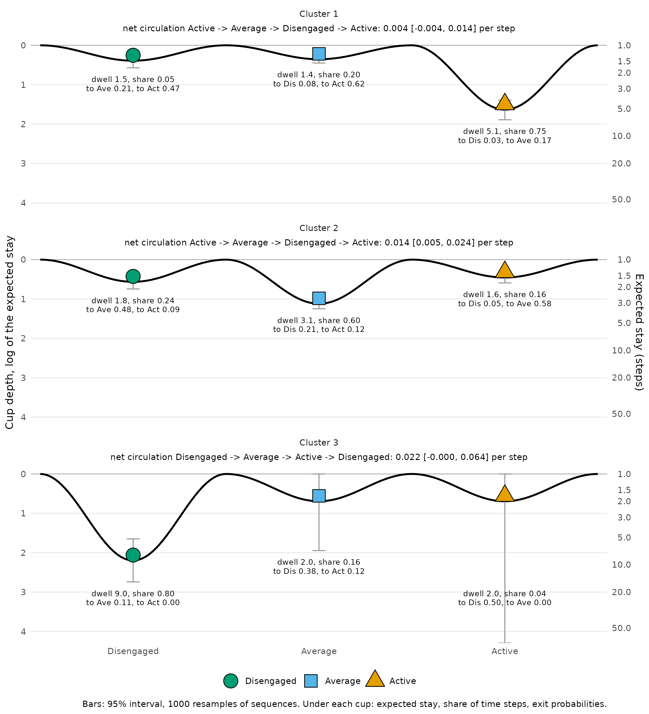
The three clusters live in three different landscapes, each with one deep cup.
- Cluster 1 has its deep cup at Active (depth 1.63 [1.39, 1.89], 5.1 courses per stay). Average and Disengaged are equally shallow (0.35 and 0.39, under 1.5 courses per stay), and both drain towards Active: 62% of average courses and 47% of disengaged courses are followed by an active one. The net circulation is indistinguishable from zero (0.004 [-0.004, 0.014]).
- Cluster 2 has its deep cup at Average (1.12 [0.98, 1.25], 3.1 courses per stay). Active is as shallow as Disengaged (0.45 and 0.56), and 58% of active courses are followed by an average one. The circulation is clear of zero (0.014 [0.005, 0.024]).
- Cluster 3 has its deep cup at Disengaged (2.20 [1.65, 2.74], 9.0 courses per stay). Its other cups rest on very few transitions, 2 of them out of Active, so their intervals are wide: [0.00, 1.95] for Average and [0.00, Inf] for Active, an upper limit that is unbounded because Active is never left in some resamples.
How long does it take to reach engagement in each cluster?
passage_time(cluster_networks, states = engagement)#> Mean First Passage Times -- 3 groups: Cluster 1, Cluster 2, Cluster 3
#>
#> --- Cluster 1 ---
#> Mean First Passage Times (3 states)
#>
#> Disengaged Average Active
#> Disengaged 18.4 5.6 2.0
#> Average 24.6 5.1 1.7
#> Active 26.1 5.9 1.3
#>
#> Stationary distribution:
#> Disengaged Average Active
#> 0.0545 0.1947 0.7508
#>
#> --- Cluster 2 ---
#> Mean First Passage Times (3 states)
#>
#> Disengaged Average Active
#> Disengaged 4.3 2.0 9.1
#> Average 5.5 1.6 8.8
#> Active 6.7 1.7 6.6
#>
#> Stationary distribution:
#> Disengaged Average Active
#> 0.2347 0.6137 0.1516
#>
#> --- Cluster 3 ---
#> Mean First Passage Times (3 states)
#>
#> Disengaged Average Active
#> Disengaged 1.3 9.0 44
#> Average 2.5 5.8 35
#> Active 2.0 11.0 23
#>
#> Stationary distribution:
#> Disengaged Average Active
#> 0.7826 0.1739 0.0435From Disengaged, a cluster 1 student reaches Active in 2.0 courses on average, a cluster 2 student in 9.1 and a cluster 3 student in 44, far beyond the 15 courses of the program. In the other direction, Active to Disengaged takes 26.1 courses in cluster 1, 6.7 in cluster 2 and 2.0 in cluster 3.
The landscape across the program
Does the stability of each state change over the program?
landscape_trend() estimates the cup depths in a sliding
window of five courses (courses 1-5, 2-6, …, 11-15) and draws one line
per state, with intervals from resampling students across all windows at
once.
phase_trend <- landscape_trend(network, along = "phase", states = engagement,
iter = 500, seed = 2026)
phase_trend#> Stability landscape along time (5-step windows): 3 states, 1 network, 500 resamples
#>
#> Cup depth (log of the expected stay; higher = more stable) at the two ends and its range:
#> state first at_first last at_last min max
#> Disengaged 1-5 0.72 11-15 0.89 0.42 1.01
#> Average 1-5 0.98 11-15 1.10 0.77 1.10
#> Active 1-5 1.31 11-15 1.29 1.03 1.32
plot(phase_trend)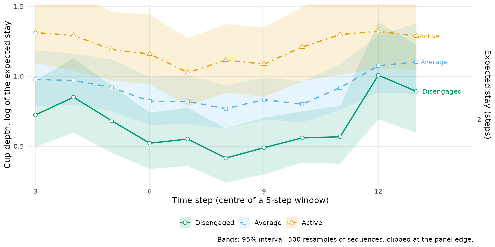
The order of the cups holds over the whole program: Active is the deepest in every window (between 1.03 and 1.32, a stay of about three courses), Average is second and Disengaged the shallowest. Disengaged changes the most: its depth falls from 0.72 in courses 1-5 to 0.42 in courses 6-10 and rises to 1.01 in courses 10-14, so disengagement holds students longest near the end of the program.
Does it change differently in each cluster?
cluster_trend <- landscape_trend(cluster_networks, along = "phase",
states = engagement, iter = 500, seed = 2026)
cluster_trend#> Stability landscape along time (5-step windows): 3 states, 3 networks, 500 resamples
#>
#> Cup depth (log of the expected stay; higher = more stable) at the two ends and its range:
#> group state first at_first last at_last min max
#> Cluster 1 Disengaged 1-5 0.69 11-15 0.00 0.00 1.10
#> Cluster 1 Average 1-5 0.29 11-15 0.33 0.22 0.47
#> Cluster 1 Active 1-5 1.89 11-15 1.58 1.45 1.89
#> Cluster 2 Disengaged 1-5 0.53 11-15 0.86 0.35 0.94
#> Cluster 2 Average 1-5 1.17 11-15 1.38 0.88 1.38
#> Cluster 2 Active 1-5 0.49 11-15 0.64 0.20 0.67
#> Cluster 3 Disengaged 1-5 1.70 11-15 Inf 1.25 2.40
#> Cluster 3 Average 1-5 0.41 11-15 NA 0.41 0.92
#> Cluster 3 Active 1-5 0.69 11-15 NA 0.69 0.69
#>
#> 21 values not estimable (state never left, absent, or no stationary distribution).
plot(cluster_trend)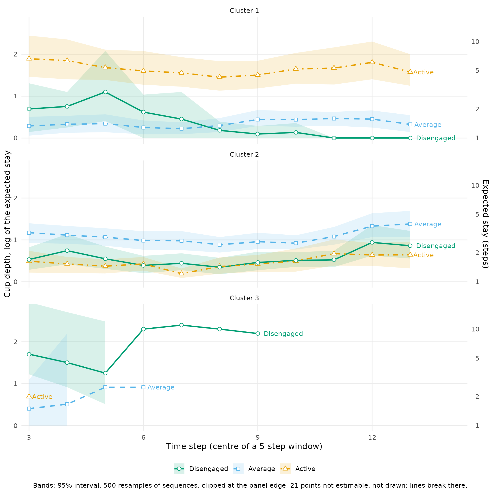
In cluster 1, Active is the deep cup in every window (1.45 to 1.89), and the Disengaged cup disappears over the program: from 0.69 in courses 1-5 to 0 in the last windows, where every disengaged course is followed by a different state. In cluster 2, Average stays the deep cup and deepens at the end (1.17 to 1.38), and Disengaged becomes stickier (0.53 to 0.86). Cluster 3 runs out of data: its students leave the program, so its later windows have no Average or Active courses, and in some windows its Disengaged cup is never left (21 such points across the three clusters, left out of the lines).
How does the landscape itself move over the program?
The same windows, with the cups and ridges of the stationary
distribution (depth = "occupancy"), drawn as a 3D
landscape: the states run across, the program runs into the picture, and
each cup becomes a channel. Here a cup sits at
,
lower when students spend more of the window in the state, and a ridge
at
of the probability flux between two states, higher when the switch is
rarer (Wang, Xu, & Wang, 2008). The windows are six courses
long.
occupancy_trend <- landscape_trend(network, along = "phase",
depth = "occupancy", window = 6,
states = engagement, iter = 500,
seed = 2026)
occupancy_trend#> Stability landscape along time (6-step windows): 3 states, 1 network, 500 resamples
#>
#> Cup potential (-log pi; lower = more time in the state) at the two ends and its range:
#> state first at_first last at_last min max
#> Disengaged 1-6 1.62 10-15 1.73 1.54 1.79
#> Average 1-6 0.82 10-15 0.79 0.79 0.86
#> Active 1-6 1.02 10-15 1.00 0.89 1.08
plot(occupancy_trend, type = "surface")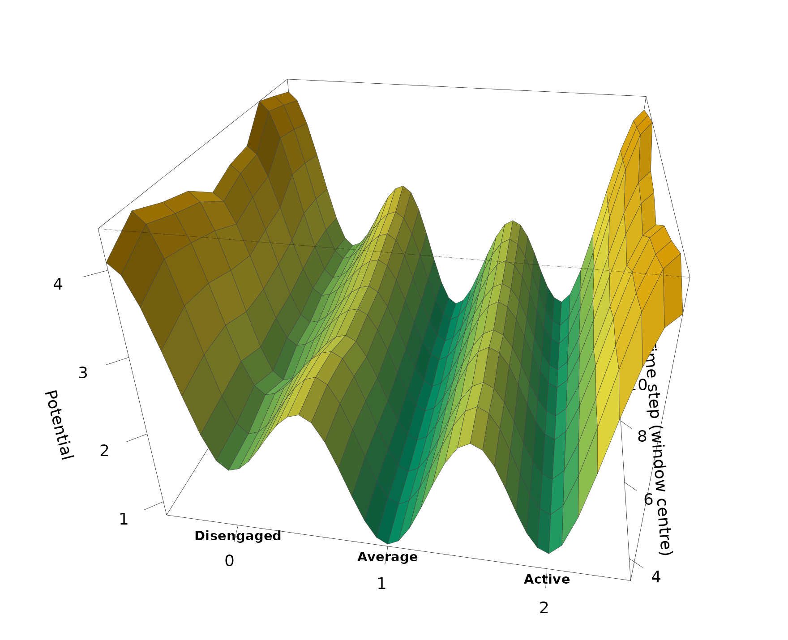
For all students the landscape barely moves over the program. Average is the lowest channel in every window (0.79 to 0.86), Active a little higher (0.89 to 1.08) and Disengaged the highest (1.54 to 1.79).
cluster_occupancy <- landscape_trend(cluster_networks, along = "phase",
depth = "occupancy", window = 6,
states = engagement, iter = 500,
seed = 2026)
cluster_occupancy#> Stability landscape along time (6-step windows): 3 states, 3 networks, 500 resamples
#>
#> Cup potential (-log pi; lower = more time in the state) at the two ends and its range:
#> group state first at_first last at_last min max
#> Cluster 1 Disengaged 1-6 2.44 10-15 3.84 2.44 3.84
#> Cluster 1 Average 1-6 1.95 10-15 1.52 1.42 1.95
#> Cluster 1 Active 1-6 0.26 10-15 0.27 0.26 0.35
#> Cluster 2 Disengaged 1-6 1.52 10-15 1.36 1.32 1.52
#> Cluster 2 Average 1-6 0.45 10-15 0.49 0.45 0.54
#> Cluster 2 Active 1-6 1.95 10-15 2.01 1.76 2.09
#> Cluster 3 Disengaged 1-6 0.31 10-15 NA 0.31 0.31
#> Cluster 3 Average 1-6 1.58 10-15 NA 1.58 1.58
#> Cluster 3 Active 1-6 2.83 10-15 NA 0.00 2.83
#>
#> 53 values not estimable (state never left, absent, or no stationary distribution).
plot(cluster_occupancy, type = "surface")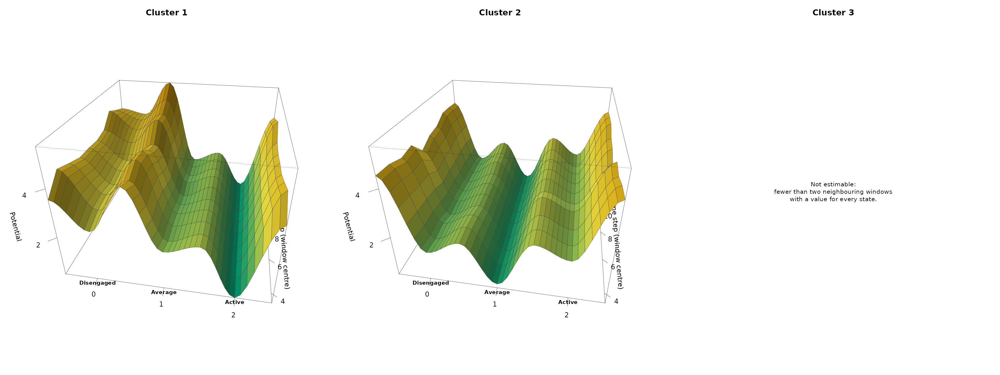
The clusters’ channels are steady too, but at different states. In cluster 1 the Active channel stays low throughout (0.26 to 0.35) while the Disengaged ground rises from 2.44 to 3.84: disengagement becomes rarer as the program goes on. In cluster 2 the Average channel stays low (0.45 to 0.54) and Active stays high (1.76 to 2.09). Cluster 3 can be drawn only in its first window: after that its students are disengaged or gone, and the chain of a window has no stationary distribution.
Landscapes across stability measures
Which cup deepens as students become more stable?
landscape_surface() adds a second axis: a per-student
stability measure from sequence_metrics(). At each value of
the measure it computes the cup depths from the 30 students closest to
that value, weighted by a tricube kernel (Cleveland, 1979), so the
surface runs from the most stable students to the most volatile; the
plot puts the most stable end in front. Six measures are used: self-loop
tendency (the share of courses that repeat the previous state),
longitudinal entropy, the complexity index, the longest spell, cyclic
feedback (how often a state recurs two or more courses later) and
initial-state persistence (the length of the opening spell). The last
section defines them.
surface <- landscape_surface(network, states = engagement,
measure = c("self_loop_tendency",
"longitudinal_entropy",
"complexity_index",
"max_spell_duration",
"cyclic_feedback_strength",
"initial_state_persistence"))
surface#> Landscape surface: 3 states, 1 network x 6 measures, 30 nearest sequences per slice
#>
#> Cup depth (log of the expected stay) at the low and the high end of each measure:
#> measure state low depth_at_low high depth_at_high
#> self_loop_tendency Disengaged 0.29 0.14 0.96 2.35
#> self_loop_tendency Average 0.29 0.46 0.96 1.43
#> self_loop_tendency Active 0.29 0.35 0.96 3.09
#> longitudinal_entropy Disengaged 0.11 1.96 0.96 0.58
#> longitudinal_entropy Average 0.11 1.42 0.96 0.57
#> longitudinal_entropy Active 0.11 3.03 0.96 0.53
#> complexity_index Disengaged 0.15 2.49 0.76 0.33
#> complexity_index Average 0.15 1.60 0.76 0.57
#> complexity_index Active 0.15 3.15 0.76 0.39
#> max_spell_duration Disengaged 2.50 0.42 14.00 1.56
#> max_spell_duration Average 2.50 0.47 14.00 1.58
#> max_spell_duration Active 2.50 0.51 14.00 2.94
#> cyclic_feedback_strength Disengaged 0.50 0.99 1.00 0.54
#> cyclic_feedback_strength Average 0.50 0.77 1.00 0.89
#> cyclic_feedback_strength Active 0.50 0.63 1.00 1.23
#> initial_state_persistence Disengaged 0.07 0.62 0.97 1.63
#> initial_state_persistence Average 0.07 0.88 0.97 2.26
#> initial_state_persistence Active 0.07 0.90 0.97 3.19
#>
#> Effective sequences per slice: network 5.0-73.0
plot(surface, ncol = 3)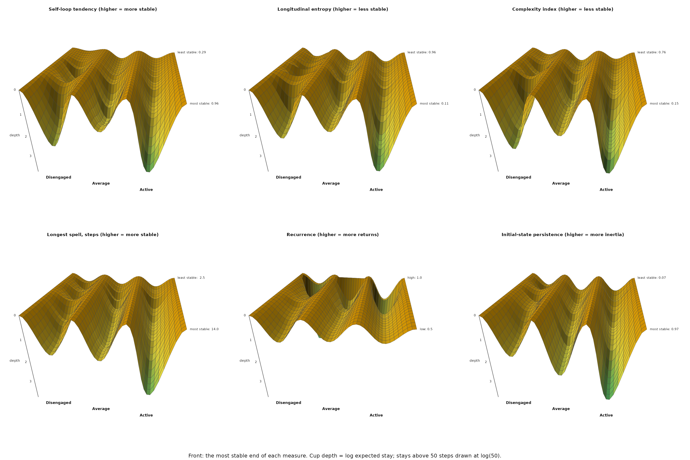
Five of the six measures give the same answer. At the stable end every cup deepens and Active is the deepest, between 2.94 and 3.19 on all five measures, an expected stay of about 20 courses. Disengaged is the second deepest for self-loop tendency, entropy and complexity (1.96 to 2.49, 7 to 12 courses): the most stable students are either stably active or, fewer of them, stably disengaged. At the volatile end all three cups are shallow and of similar depth (0.14 to 0.90). Cyclic feedback differs: as recurrence rises, the Active cup deepens (0.63 to 1.23) and the Disengaged cup becomes shallower (0.99 to 0.54).
The measures come from the same sequences as the depths, so the cups of the most stable students are deep by construction, self-loop tendency most of all, and the depths at the stable end exceed any stay the 15-course program can show. What the surface adds is which cup deepens as stability rises: Active first, Disengaged second.
Does the same hold inside each cluster?
cluster_surface <- landscape_surface(cluster_networks, states = engagement,
measure = c("self_loop_tendency",
"longitudinal_entropy"))
cluster_surface#> Landscape surface: 3 states, 3 networks x 2 measures, 30 nearest sequences per slice
#>
#> Cup depth (log of the expected stay) at the low and the high end of each measure:
#> group measure state low depth_at_low high depth_at_high
#> Cluster 1 self_loop_tendency Disengaged 0.36 0.42 1.00 0.27
#> Cluster 1 self_loop_tendency Average 0.36 0.30 1.00 0.55
#> Cluster 1 self_loop_tendency Active 0.36 0.91 1.00 2.86
#> Cluster 1 longitudinal_entropy Disengaged 0.00 0.00 0.94 0.47
#> Cluster 1 longitudinal_entropy Average 0.00 0.27 0.94 0.36
#> Cluster 1 longitudinal_entropy Active 0.00 3.07 0.94 1.01
#> Cluster 2 self_loop_tendency Disengaged 0.29 0.15 0.81 0.73
#> Cluster 2 self_loop_tendency Average 0.29 0.61 0.81 1.92
#> Cluster 2 self_loop_tendency Active 0.29 0.22 0.81 0.88
#> Cluster 2 longitudinal_entropy Disengaged 0.36 0.62 0.99 0.57
#> Cluster 2 longitudinal_entropy Average 0.36 1.80 0.99 0.64
#> Cluster 2 longitudinal_entropy Active 0.36 0.23 0.99 0.40
#> Cluster 3 self_loop_tendency Disengaged 0.67 2.10 1.00 2.29
#> Cluster 3 self_loop_tendency Average 0.67 0.68 1.00 0.83
#> Cluster 3 self_loop_tendency Active 0.67 0.69 1.00 NA
#> Cluster 3 longitudinal_entropy Disengaged 0.00 2.49 0.63 1.97
#> Cluster 3 longitudinal_entropy Average 0.00 0.00 0.63 0.89
#> Cluster 3 longitudinal_entropy Active 0.00 0.00 0.63 0.70
#>
#> Effective sequences per slice: Cluster 1 15.8-26.5, Cluster 2 11.6-27.8, Cluster 3 4.0-8.0
plot(cluster_surface)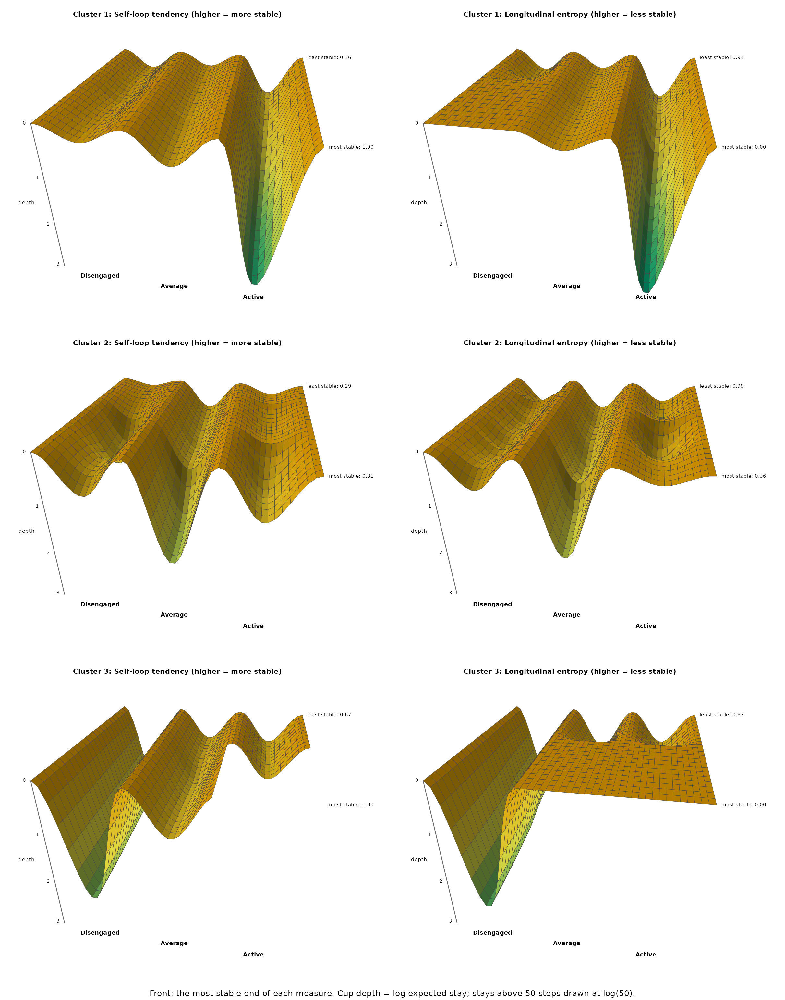
Within clusters, stability deepens the cluster’s own cup. In cluster 1 the Active cup deepens from 0.91 for the students with the lowest self-loop tendency to 2.86 for the highest, and it is the deepest cup at both ends of both measures. In cluster 2 the Average cup deepens from 0.61 to 1.92: the most stable cluster 2 students are stably average, not stably active. Cluster 3 has 4 to 8 effective students per slice, so its surfaces show no more than its deep Disengaged cup.
The students
The network and the landscapes describe the states of a group, and a
group-level description can misrepresent the students in it (Saqr, 2024;
Saqr, Vogelsmeier, & López-Pernas, 2024); in self-regulated
learning, the average process does not reflect the process of individual
students (Saqr & López-Pernas, 2024). Saqr, López-Pernas and Tikka
(2026) read stability from each student’s own sequence: a stable student
visits few states, stays long in each, returns to the same state, and
spends most of the program in one state that acts as their attractor.
They group the sequence indices into three families, diversity of
states, resistance to change and structural dynamics.
sequence_metrics() computes the indices, as
sequence_indices() in codyna does (Tikka, López-Pernas,
& Saqr, 2026); most are also defined in TraMineR (Gabadinho et al.,
2011). indices selects the ones returned.
How varied is each student’s sequence?
The first family measures the diversity of states.
unique_states counts the distinct states a student visits.
longitudinal_entropy is the Shannon entropy of the
student’s state proportions
,
divided by the log of the number of states
so that it runs from 0 to 1:
.
simpson_diversity is the probability that two courses drawn
from the sequence are in different states,
.
Low values mean a sequence concentrated in one state, the mark of a
strong attractor (Saqr, López-Pernas, & Tikka, 2026).
diversity <- sequence_metrics(trajectories,
indices = c("valid_n", "unique_states",
"longitudinal_entropy",
"simpson_diversity"))
summary(diversity)#> valid_n unique_states longitudinal_entropy simpson_diversity
#> Min. : 0.00 Min. :0.000 Min. :0.0000 Min. :0.0000
#> 1st Qu.:15.00 1st Qu.:2.000 1st Qu.:0.4416 1st Qu.:0.2400
#> Median :15.00 Median :2.000 Median :0.5794 Median :0.4444
#> Mean :13.55 Mean :2.283 Mean :0.5583 Mean :0.3821
#> 3rd Qu.:15.00 3rd Qu.:3.000 3rd Qu.:0.7426 3rd Qu.:0.4978
#> Max. :15.00 Max. :3.000 Max. :0.9878 Max. :0.6578
#> NAs :2 NAs :2Two students have no observed course and get NA in every
index, and 20 are observed for fewer than 15 courses: a sequence ends at
its last observed course. The typical student visits two of the three
states. The mean entropy is 0.56 and the mean Simpson diversity 0.38:
the cohort is more varied than the mostly engaged students Saqr,
López-Pernas and Tikka (2026) analysed (0.38 and 0.27).
subset(sequence_metrics(trajectories,
indices = c("first_state", "valid_n",
"unique_states")),
unique_states == 1)#> first_state valid_n unique_states
#> 30 Disengaged 2 1
#> 32 Active 15 1
#> 33 Disengaged 1 1
#> 82 Active 15 1
#> 86 Active 15 1
#> 94 Active 15 1
#> 97 Disengaged 1 1
#> 98 Disengaged 1 1
#> 102 Disengaged 1 1
#> 103 Disengaged 2 1
#> 106 Disengaged 1 1
#> 124 Active 15 1The students who visit a single state are of two kinds. Five are
Active in all 15 courses: a single attractor that held for the whole
program. Seven are Disengaged and are observed for one or two courses
only: their sequences are stable because they ended, not because they
resisted change. A diversity of 0 needs valid_n beside it
before it can be read as stability.
How strongly does each student resist change?
The second family measures resistance to change.
self_loop_tendency is the share of a student’s transitions
that stay in the same state and transition_rate the share
that change it; the two sum to 1. mean_spell_duration and
max_spell_duration are the mean and the longest run of one
state, in courses. initial_state_persistence is the length
of the opening spell as a share of the sequence,
initial_state_proportion the share of the sequence spent in
the first state, and initial_state_influence_decay the
share of the first third spent in the first state minus the share of the
last third, positive when the first state fades.
summary(sequence_metrics(trajectories,
indices = c("self_loop_tendency", "transition_rate",
"mean_spell_duration",
"max_spell_duration",
"initial_state_persistence",
"initial_state_proportion",
"initial_state_influence_decay")))#> self_loop_tendency transition_rate mean_spell_duration max_spell_duration
#> Min. :0.2143 Min. :0.0000 Min. : 1.000 Min. : 1.000
#> 1st Qu.:0.5000 1st Qu.:0.2143 1st Qu.: 1.667 1st Qu.: 4.000
#> Median :0.5714 Median :0.4286 Median : 2.143 Median : 5.000
#> Mean :0.6278 Mean :0.3722 Mean : 3.189 Mean : 6.169
#> 3rd Qu.:0.7857 3rd Qu.:0.5000 3rd Qu.: 3.750 3rd Qu.: 7.000
#> Max. :1.0000 Max. :0.7857 Max. :15.000 Max. :15.000
#> NAs :7 NAs :7 NAs :2 NAs :2
#> initial_state_persistence initial_state_proportion initial_state_influence_decay
#> Min. :0.06667 Min. :0.06667 Min. :-0.63333
#> 1st Qu.:0.06667 1st Qu.:0.31667 1st Qu.:-0.03333
#> Median :0.13333 Median :0.60000 Median : 0.18333
#> Mean :0.28557 Mean :0.55793 Mean : 0.17439
#> 3rd Qu.:0.40000 3rd Qu.:0.80000 3rd Qu.: 0.33333
#> Max. :1.00000 Max. :1.00000 Max. : 1.00000
#> NAs :2 NAs :2 NAs :2Students repeat their state in 63% of transitions on average (median 57%, range 21% to 100%), and change it in the other 37%. The median spell lasts 2.1 courses and the median longest spell 5 courses. The median opening spell covers 13% of the sequence, two courses of fifteen, although the first state takes 56% of the sequence on average, because students come back to it. The mean influence decay is 0.17: for most students the first state weakens over the program. The cohort resists change less than the mostly engaged students of Saqr, López-Pernas and Tikka (2026), whose mean self-loop tendency was 0.75 and initial-state persistence 0.45.
Where does each student’s sequence settle?
The third family describes the structure of a sequence.
cyclic_feedback_strength is the largest share, over lags of
two or more courses, of positions whose state recurs that many courses
later. dominant_state is the student’s most frequent state,
their attractor; dominant_proportion its share of the
sequence and dominant_max_spell its longest spell.
transition_complexity is the share of the six possible
changes of state that the student makes at least once.
emergent_state is a state that settles in later in the
program and outlasts the opening.
structure_indices <- sequence_metrics(trajectories,
indices = c("dominant_state",
"dominant_proportion",
"dominant_max_spell",
"cyclic_feedback_strength",
"transition_complexity",
"emergent_state"))
summary(structure_indices)#> dominant_state dominant_proportion dominant_max_spell cyclic_feedback_strength
#> Length :138 Min. :0.4000 Min. : 1.000 Min. :0.0000
#> N.unique : 3 1st Qu.:0.5804 1st Qu.: 4.000 1st Qu.:0.6981
#> N.blank : 0 Median :0.6667 Median : 5.000 Median :1.0000
#> Min.nchar: 6 Mean :0.7091 Mean : 6.096 Mean :0.8267
#> Max.nchar: 10 3rd Qu.:0.8667 3rd Qu.: 7.000 3rd Qu.:1.0000
#> NAs : 2 Max. :1.0000 Max. :15.000 Max. :1.0000
#> NAs :2 NAs :2 NAs :2
#> transition_complexity emergent_state
#> Min. :0.0000 Length :138
#> 1st Qu.:0.3333 N.unique : 3
#> Median :0.3333 N.blank : 0
#> Mean :0.4240 Min.nchar: 6
#> 3rd Qu.:0.6667 Max.nchar: 10
#> Max. :1.0000 NAs : 33
#> NAs :2The dominant state takes 71% of a student’s sequence on average and never less than 40%: every student has an attractor that holds at least two courses in five. Students use a third of the possible changes (median 0.33, two of six).
aggregate(cbind(self_loop_tendency, dominant_proportion,
longitudinal_entropy, mean_spell_duration) ~ dominant_state,
data = sequence_metrics(trajectories), FUN = median)#> dominant_state self_loop_tendency dominant_proportion longitudinal_entropy mean_spell_duration
#> 1 Active 0.6666667 0.7333333 0.5793802 2.500000
#> 2 Average 0.5714286 0.6666667 0.6289055 2.142857
#> 3 Disengaged 0.6428571 0.7142857 0.5445684 2.000000The attractors differ in how firmly they hold their students. Students whose attractor is Active are the most stable: the median student repeats their state in 67% of transitions, spends 73% of the program in Active and stays 2.5 courses at a time. Students whose attractor is Average are the least stable on three of the four indices; Disengaged students have the shortest spells (2.0 courses). The deepest cup of the landscape, Active, holds its individual students most firmly too.
Do students end where they started?
A complex system is sensitive to its initial conditions (Saqr, López-Pernas, & Tikka, 2026): the state a student starts in may shape the state they end in.
first_last <- table(sequence_metrics(trajectories,
indices = c("first_state",
"last_state")))
first_last#> last_state
#> first_state Active Average Disengaged
#> Active 26 21 5
#> Average 16 27 7
#> Disengaged 3 14 17
mosaic_plot(first_last, xlab = "First state", ylab = "Last state", seed = 1)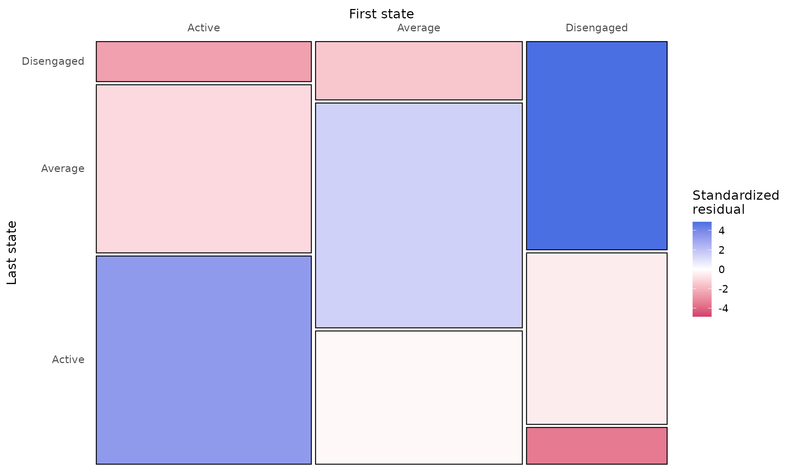
Half the students (70 of 136) end in the state they started in. The start carries most at the extremes: 26 of the 52 students who start Active end Active and only 5 end Disengaged, and 17 of the 34 who start Disengaged end Disengaged and only 3 end Active. The mosaic marks these cells by their standardised residuals: Active to Active and Disengaged to Disengaged occur more often than independence predicts, and the crossings between the extremes less often.
How much of each sequence is spent in the favourable state?
integrative_potential weights each course by its
position, so that time in Active late in the program counts more than
time in Active at the start (Brzinsky-Fay, 2018); favorable
names the favourable state.
summary(sequence_metrics(trajectories, favorable = "Active",
indices = c("integrative_potential",
"complexity_index")))#> integrative_potential complexity_index
#> Min. :0.000000 Min. :0.0000
#> 1st Qu.:0.008333 1st Qu.:0.4019
#> Median :0.220833 Median :0.5243
#> Mean :0.346837 Mean :0.4994
#> 3rd Qu.:0.613301 3rd Qu.:0.6411
#> Max. :1.000000 Max. :0.7824
#> NAs :2 NAs :2The median student spends a position-weighted 22% of the program in Active (mean 0.35), and a quarter of the students spend almost none. The complexity index combines the families into one number per student: entropy transition rate the coefficient of variation of the spell lengths (capped at 1), 0 for a student who never changes state. Its mean is 0.50 (range 0 to 0.78); built from entropy and the transition rate, it ranks the students much as those two do.
Related articles
The predictability of the process (transition entropy, whether the next state depends on more than the current one, which histories change it) is covered in the transition-entropy vignette and the higher-order network article. The stability of the estimates (bootstrap, Bayesian certainty, split-half reliability, case-dropping of edges and centralities) is covered in the model assessment article.
How to cite this article
Saqr, M., López-Pernas, S., & Misiejuk, K. (2026). Stability of engagement: States, landscapes and students. Nestimate. HTML · PDF
References
Brzinsky-Fay, C. (2018). Unused resources: Sequence and trajectory indicators. International Symposium on Sequence Analysis and Related Methods, Monte Verità.
Cleveland, W. S. (1979). Robust locally weighted regression and smoothing scatterplots. Journal of the American Statistical Association, 74(368), 829–836. https://doi.org/10.1080/01621459.1979.10481038
Gabadinho, A., Ritschard, G., Müller, N. S., & Studer, M. (2011). Analyzing and visualizing state sequences in R with TraMineR. Journal of Statistical Software, 40(4), 1–37. https://doi.org/10.18637/jss.v040.i04
Helske, J., Helske, S., Saqr, M., López-Pernas, S., & Murphy, K. (2024). A modern approach to transition analysis and process mining with Markov models in education. In M. Saqr & S. López-Pernas (Eds.), Learning analytics methods and tutorials (pp. 381–427). Springer. https://doi.org/10.1007/978-3-031-54464-4_12
Kemeny, J. G., & Snell, J. L. (1976). Finite Markov chains. Springer.
Kramers, H. A. (1940). Brownian motion in a field of force and the diffusion model of chemical reactions. Physica, 7(4), 284–304. https://doi.org/10.1016/S0031-8914(40)90098-2
López-Pernas, S., Conde, M. Á., Raspopović Milić, M., & Saqr, M. (2026). Stable means, shifting patterns: Examining SRL through a complex dynamic systems lens. Computers in Human Behavior Reports, 22, 101038. https://doi.org/10.1016/j.chbr.2026.101038
López-Pernas, S., & Saqr, M. (2024a). How the dynamics of engagement explain the momentum of achievement and the inertia of disengagement: A complex systems theory approach. Computers in Human Behavior, 153, 108126. https://doi.org/10.1016/j.chb.2023.108126
López-Pernas, S., & Saqr, M. (2024b). Modeling the dynamics of longitudinal processes in education. A tutorial with R for the VaSSTra method. In M. Saqr & S. López-Pernas (Eds.), Learning analytics methods and tutorials (pp. 355–379). Springer. https://doi.org/10.1007/978-3-031-54464-4_11
Saqr, M. (2024). Group-level analysis of engagement poorly reflects individual students’ processes: Why we need idiographic learning analytics. Computers in Human Behavior, 150, 107991. https://doi.org/10.1016/j.chb.2023.107991
Saqr, M., Dever, D., López-Pernas, S., Gernigon, C., Marchand, G., & Kaplan, A. (2025). Complex dynamic systems in education: Beyond the static, the linear and the causal reductionism. In M. Saqr & S. López-Pernas (Eds.), Advanced learning analytics methods: AI, precision and complexity (pp. 289–311). Springer. https://doi.org/10.1007/978-3-031-95365-1_12
Saqr, M., & López-Pernas, S. (2021). The longitudinal trajectories of online engagement over a full program. Computers & Education, 175, 104325. https://doi.org/10.1016/j.compedu.2021.104325
Saqr, M., & López-Pernas, S. (2024). Mapping the self in self-regulation using complex dynamic systems approach. British Journal of Educational Technology, 55(4), 1376–1397. https://doi.org/10.1111/bjet.13452
Saqr, M., López-Pernas, S., Helske, S., Durand, M., Murphy, K., Studer, M., & Ritschard, G. (2024). Sequence analysis in education: Principles, technique, and tutorial with R. In M. Saqr & S. López-Pernas (Eds.), Learning analytics methods and tutorials (pp. 321–354). Springer. https://doi.org/10.1007/978-3-031-54464-4_10
Saqr, M., López-Pernas, S., Helske, S., & Hrastinski, S. (2023). The longitudinal association between engagement and achievement varies by time, students’ profiles, and achievement state: A full program study. Computers & Education, 199, 104787. https://doi.org/10.1016/j.compedu.2023.104787
Saqr, M., López-Pernas, S., Jovanović, J., & Gašević, D. (2023). Intense, turbulent, or wallowing in the mire: A longitudinal study of cross-course online tactics, strategies, and trajectories. The Internet and Higher Education, 57, 100902. https://doi.org/10.1016/j.iheduc.2022.100902
Saqr, M., López-Pernas, S., & Misiejuk, K. (2026). Nestimate: An R package for dynamic, probabilistic, and high order network analysis. Applied Psychological Measurement. https://doi.org/10.1177/01466216261472019
Saqr, M., López-Pernas, S., & Tikka, S. (2025). Mapping relational dynamics with transition network analysis: A primer and tutorial. In M. Saqr & S. López-Pernas (Eds.), Advanced learning analytics methods: AI, precision and complexity (pp. 371–411). Springer. https://doi.org/10.1007/978-3-031-95365-1_15
Saqr, M., López-Pernas, S., & Tikka, S. (2026). Modeling stability and change from a complex systems perspective. In M. Saqr, K. Misiejuk, & S. López-Pernas (Eds.), Innovations in analytics of learning dynamics (pp. 51–61). Springer. https://doi.org/10.1007/978-3-032-34157-0_4
Saqr, M., López-Pernas, S., Tikka, S., & Spitzer, M. (2026). Early warning signals appear long before dropping out: An idiographic approach grounded in complex dynamic systems theory. In Proceedings of the 16th International Learning Analytics and Knowledge Conference (LAK26) (pp. 216–226). ACM. https://doi.org/10.1145/3785022.3785050
Saqr, M., López-Pernas, S., Törmänen, T., Kaliisa, R., Misiejuk, K., & Tikka, S. (2025). Transition network analysis: A novel framework for modeling, visualizing, and identifying the temporal patterns of learners and learning processes. In Proceedings of the 15th International Learning Analytics and Knowledge Conference (LAK25) (pp. 351–361). ACM. https://doi.org/10.1145/3706468.3706513
Saqr, M., Schreuder, M. J., & López-Pernas, S. (2024). Why educational research needs a complex system revolution that embraces individual differences, heterogeneity, and uncertainty. In M. Saqr & S. López-Pernas (Eds.), Learning analytics methods and tutorials (pp. 723–734). Springer. https://doi.org/10.1007/978-3-031-54464-4_22
Saqr, M., Vogelsmeier, L. V. D. E., & López-Pernas, S. (2024). Capturing where the learning process takes place: A person-specific and person-centered primer. Learning and Individual Differences, 113, 102492. https://doi.org/10.1016/j.lindif.2024.102492
Scheffer, M., Bascompte, J., Brock, W. A., Brovkin, V., Carpenter, S. R., Dakos, V., Held, H., van Nes, E. H., Rietkerk, M., & Sugihara, G. (2009). Early-warning signals for critical transitions. Nature, 461(7260), 53–59. https://doi.org/10.1038/nature08227
Schnakenberg, J. (1976). Network theory of microscopic and macroscopic behavior of master equation systems. Reviews of Modern Physics, 48(4), 571–585. https://doi.org/10.1103/RevModPhys.48.571
Tikka, S., López-Pernas, S., & Saqr, M. (2026). Analyzing complex dynamic systems with the R package codyna [Preprint]. https://doi.org/10.13140/RG.2.2.19126.56646
Vemuri, P., López-Pernas, S., Poelmans, S., Snoeck, M., & Saqr, M. (2026). The worrisome dynamics of persistent disengagement: A longitudinal study of university freshmen. Journal of Computer Assisted Learning, 42(3). https://doi.org/10.1002/jcal.70250
Wang, J., Xu, L., & Wang, E. (2008). Potential landscape and flux framework of nonequilibrium networks: Robustness, dissipation, and coherence of biochemical oscillations. Proceedings of the National Academy of Sciences, 105(34), 12271–12276. https://doi.org/10.1073/pnas.0800579105